★ FLEETWOOD MAC ★ THE BEATLES ★ THE SMITHS ★ THE DOORS ★ LED ZEPPELIN ★ KING CRIMSON ★ FOO FIGHTERS ★ SOUNDGARDEN ★ PINK FLOYD ★
O FESTIVAL
UMA NOITE 9 BANDAS DECADAS DE ROCK
O Rock Antique Festival reune algumas das maiores bandas do planeta e da historia do rock. Um encontro de geracoes, estilos e decadas diferentes, celebrando a historia do ROCKKKKK.
★ FLEETWOOD MAC ★ THE BEATLES ★ THE SMITHS ★ THE DOORS ★ LED ZEPPELIN ★ KING CRIMSON ★ FOO FIGHTERS ★ SOUNDGARDEN ★ PINK FLOYD ★
LINE-UP
CONFIRA AS LENDAS DO SHOW
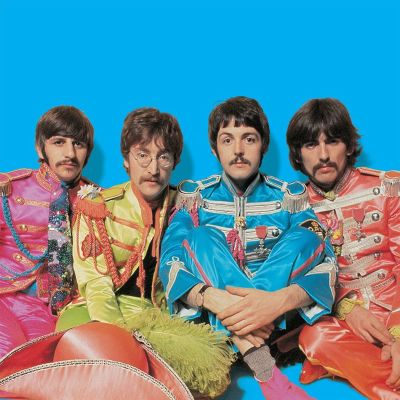
THE BEATLES
FROM LIVERPOOL
Os Beatles foram uma lendária banda de rock britânica formada em Liverpool em 1960. Composta por John Lennon, Paul McCartney, George Harrison e Ringo Starr, o grupo revolucionou a música, a moda e a cultura pop global na década de 1960. Conhecidos como os "Fab Four", protagonizaram o fenômeno da "Beatlemania" e são amplamente considerados a banda mais influente e bem-sucedida da história da música popular.
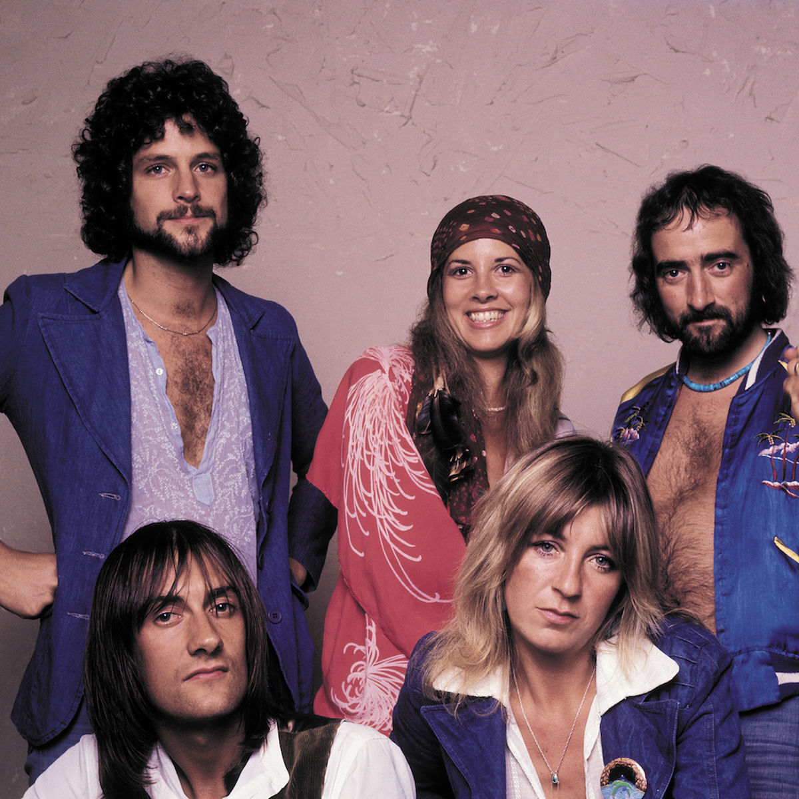
FLEETWOOD MAC
FROM LONDON
O Fleetwood Mac é uma lendária banda de rock anglo-americana famosa por transformar dramas e divórcios reais em obras-primas da música. O grupo começou no blues nos anos 60 e atingiu o estrelato mundial nos anos 70 com um som soft rock sofisticado, marcado pelas vozes de Stevie Nicks e Christine McVie. Seu álbum icônico, Rumours (1977), tornou-se um dos mais vendidos da história.
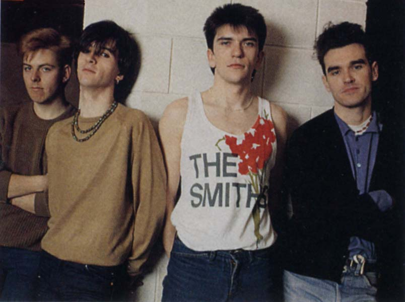
THE SMITHS
FROM MANCHESTER
The Smiths foi uma icônica banda britânica de rock alternativo dos anos 1980, famosa por unir as guitarras melódicas de Johnny Marr às letras melancólicas e irônicas do vocalista Morrissey.
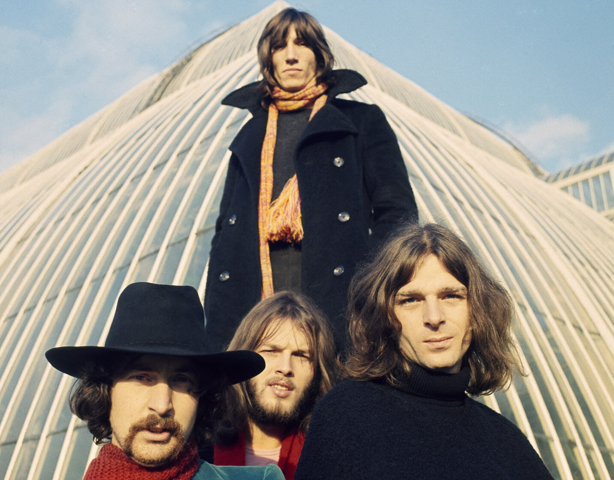
PINK FLOYD
FROM LONDON
O Pink Floyd foi uma lendária banda britânica de rock progressivo e psicodélico fundada em 1965, mundialmente famosa por suas composições filosóficas, experimentações sonoras e álbuns conceituais icônicos como The Dark Side of the Moon e The Wall.
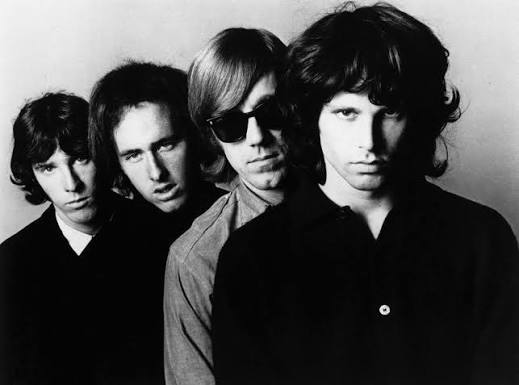
THE DOORS
FROM LOS ANGELES
The Doors foi uma das bandas mais influentes do rock psicodélico dos anos 1960, famosa por fundir poesia poética, blues, jazz e rock com uma sonoridade única marcada pelo uso do órgão Vox Continental e pela ausência de um baixista fixo. Liderado pelo carismático e controverso vocalista Jim Morrison, o grupo marcou a história da música com letras sombrias, performances teatrais e clássicos imortais como "Light My Fire", "Riders on the Storm" e "The End".
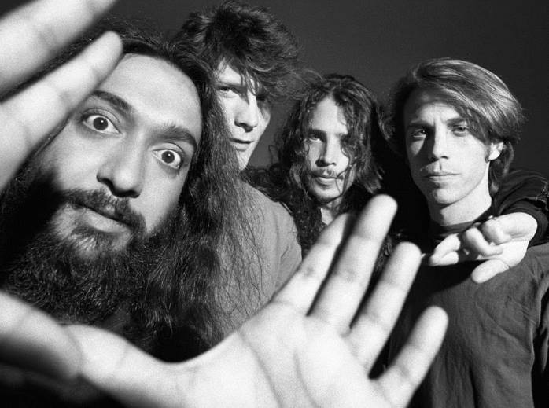
SOUNDGARDEN
FROM SEATTLE
O Soundgarden foi uma influente banda de rock norte-americana formada em 1984 em Seattle, Washington. O grupo é amplamente reconhecido como um dos pioneiros e pilares do movimento grunge e do rock alternativo, combinando a peso do heavy metal e do hard rock com a atitude do punk rock.
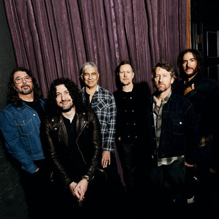
FOOFIGHTERS
FROM SEATTLE
O Foo Fighters é uma influente banda de rock americana formada em 1994 pelo ex-baterista do Nirvana, Dave Grohl. O grupo é mundialmente conhecido por seu estilo rock alternativo, post-grunge e hard rock, combinando melodias marcantes com guitarras pesadas e vocais enérgicos.
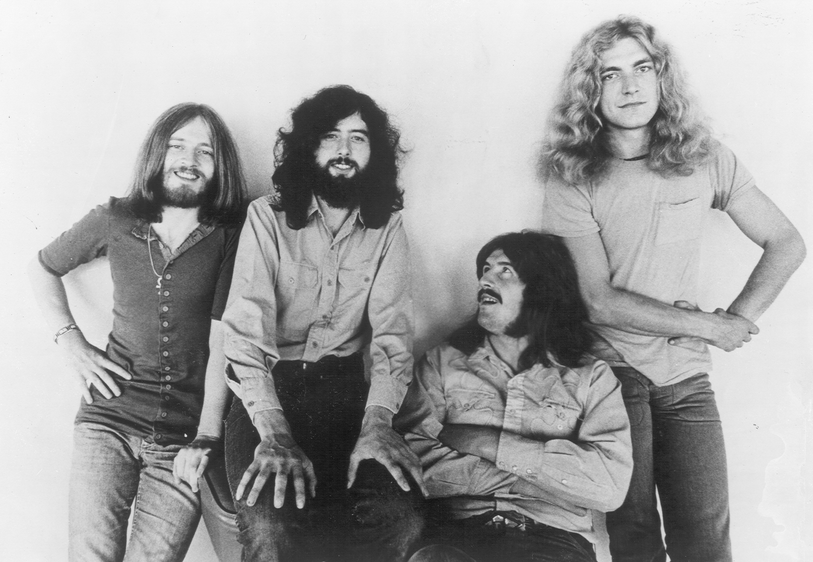
LED ZEPPELIN
FROM LONDON
O Led Zeppelin foi uma lendária banda britânica de rock formada em 1968, amplamente considerada uma das mais influentes e inovadoras da história da música. Unindo blues pesado, folk e hard rock, o quarteto composto por Jimmy Page, Robert Plant, John Paul Jones e John Bonham moldou o surgimento do heavy metal e vendeu centenas de milhões de discos com clássicos atemporais como "Stairway to Heaven".
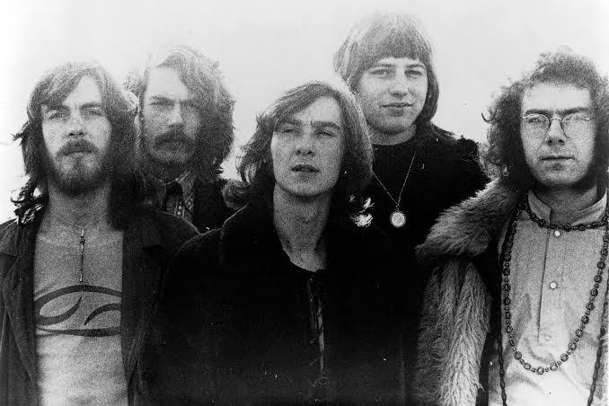
KING CRIMSON
FROM LONDON
O King Crimson é uma influente banda britânica de rock progressivo fundada em 1968 por Robert Fripp. O grupo é amplamente reconhecido por redefinir o gênero com o álbum de estreia In the Court of the Crimson King (1969) e por sua constante evolução musical, que mistura jazz, música clássica, metal e elementos eletrônicos experimentais.
★ FLEETWOOD MAC ★ THE BEATLES ★ THE SMITHS ★ THE DOORS ★ LED ZEPPELIN ★ KING CRIMSON ★ FOO FIGHTERS ★ SOUNDGARDEN ★ PINK FLOYD ★
ESTRUTURA
TUDO PREPARADO PARA A NOITE DO ROCK
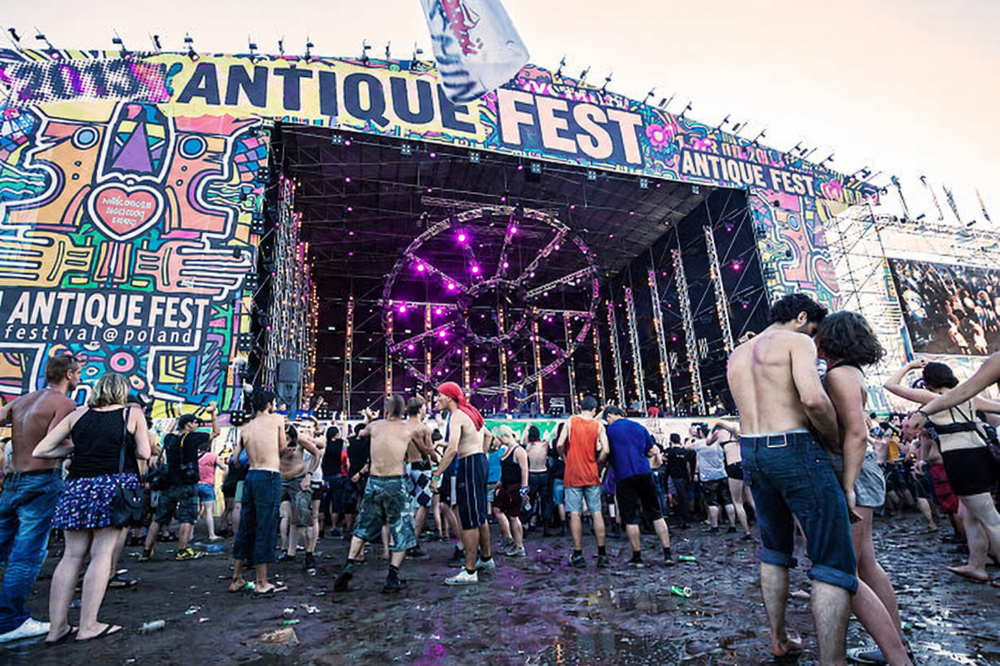
PALCO ANTIQUE
Palco principal do festival, preparado para receber as grandes lendas do rock durante toda a noite.
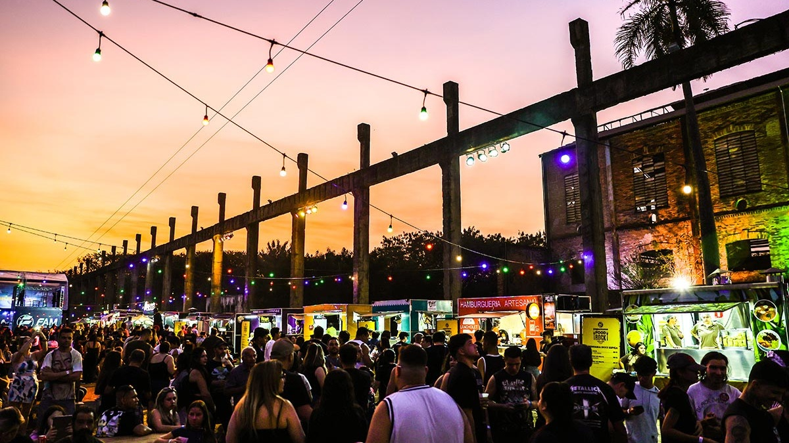
ALIMENTAÇÃO
Área com comidas, lanches e bebidas para o público durante todo o festival.
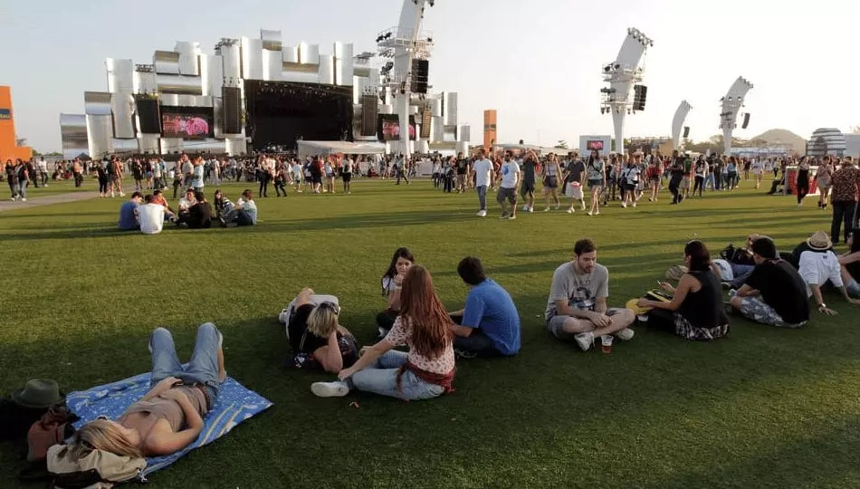
CONFORT GRASS
Um espaço mais tranquilo para descansar entre as ou nas apresentações.
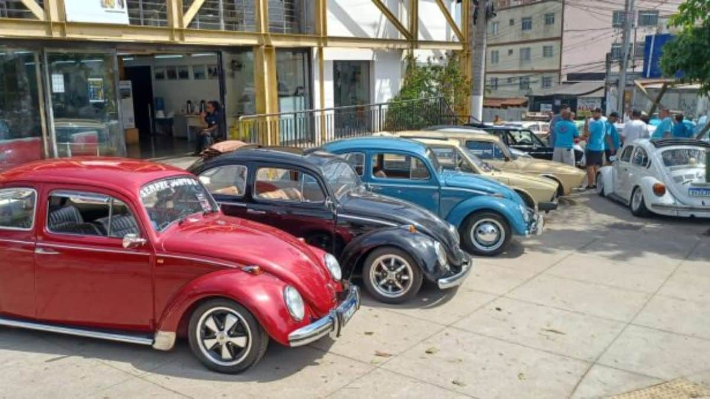
EXPOSIÇÃO OLD CARROS
Para quem e fa de um bom carrao veio e estiloso.
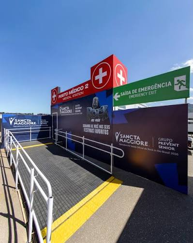
PRIMEIROS SOCORROS
Espaço preparado para atendimento durante todo o evento.

SETORES
Os setores do show.
★ FLEETWOOD MAC ★ THE BEATLES ★ THE SMITHS ★ THE DOORS ★ LED ZEPPELIN ★ KING CRIMSON ★ FOO FIGHTERS ★ SOUNDGARDEN ★ PINK FLOYD ★